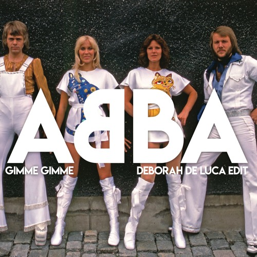

Andersson, Lyngstad, Fältskog och Ulvaeus i nederländsk TV 1974.
Abba (av musikgruppen skrivet ABBA och som logotyp AᗺBA, med det första
B:et spegelvänt) är en svensk popgrupp, som var aktiv under en
tioårsperiod mellan 1972 och 1982 samt inför lansering av sitt sista
studioalbum, utgivet 2021.